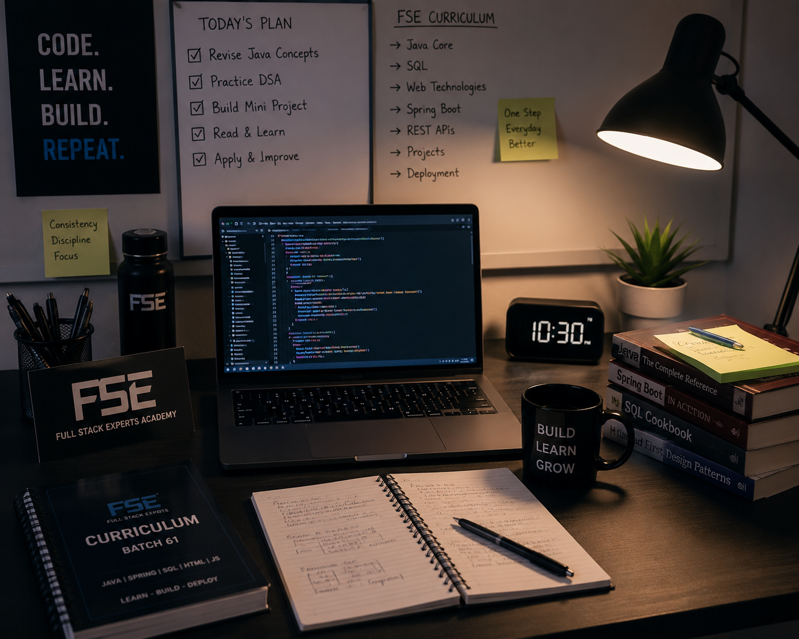
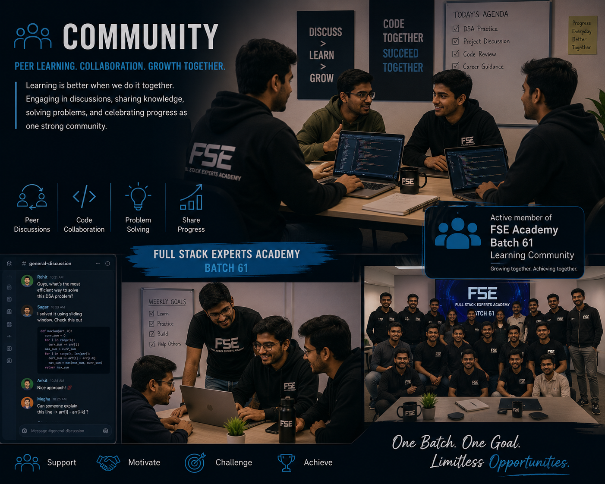

| Year | Milestone | Context |
|---|---|---|
| 2025 | Completed B.Tech in Computer Science | VIT-AP University |
| 2025 | Built SecureVision – AI Exam Proctoring System (Final Year Project) | VIT-AP University |
| 2025 | Deployed 2 live HTML projects (Portfolio, Coding Cart) | Netlify |
| 2026 | Enrolled in Java Full Stack Development, Batch 61 | Full Stack Experts Academy, Hyderabad |
| Certification | Institution | Year |
|---|---|---|
| Oracle Cloud Infrastructure 2025 Certified Generative AI Professional | Oracle | 2025 |
| Google Cloud Computing Foundations | NPTEL | 2025 |
| Data Science for Engineers | NPTEL | 2025 |

Daily practice happens in a focused, structured environment — following the FSE curriculum step by step, revisiting concepts, and building small projects to reinforce each topic before moving forward.

Was a member of the CodeChef Coding Club during college, alongside being an active member of the Full Stack Experts Academy Batch 61 learning community — engaging in peer discussions, sharing progress, and learning alongside fellow trainees.
Small, consistent steps > occasional bursts of effort — as the saying goes, “slow and steady wins the race”. One skill mastered deeply…is worth more than ten explored halfway.
Entities used above: > — “ ” …
|
Milestones | Certifications | Learning Environment | Community | Entities | What's Next